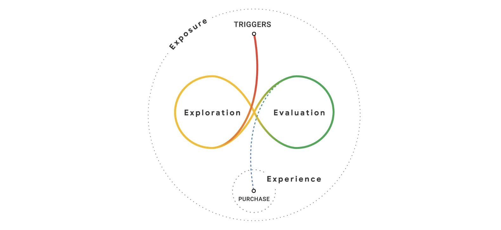
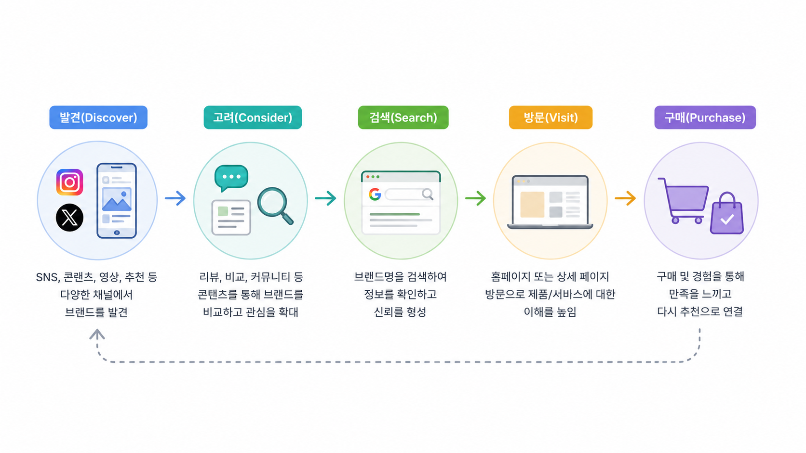

디지털 마케팅에서 오랫동안 '검색'은 고객을 만나는 가장 중요한 접점이었다. 소비자는 필요한 제품이나 서비스를 검색하고, 브랜드는 검색 결과 상위에 노출되기 위해 SEO와 검색광고에 많은 예산을 투자해 왔다.
하지만 최근 소비자의 정보 탐색 방식은 조금씩 달라지고 있다. 이제는 검색창에 키워드를 입력하기 전에 SNS 피드에서 제품을 발견하고, 유튜브 알고리즘이 추천한 영상을 시청하거나, 쇼핑 플랫폼과 AI 추천 서비스를 통해 새로운 브랜드를 접하는 경우가 늘어나고 있다. 브랜드를 '찾는(Search)' 시대에서 브랜드를 '발견하는(Discover)' 시대로 변화하고 있는 것이다.
고객은 더 이상 검색만 하지 않는다
과거에는 궁금한 점이 생기면 검색엔진에서 키워드를 입력하는 것이 자연스러운 행동이었다. 하지만 최근에는 인스타그램 릴스, 유튜브 쇼츠, 틱톡, 쇼핑 플랫폼 추천 피드 등 다양한 채널이 정보 탐색의 시작점이 되고 있다.
예를 들어 여행을 계획하는 소비자는 검색보다 먼저 유튜브 브이로그를 시청하고, 패션 아이템은 인스타그램이나 릴스에서 스타일링 콘텐츠를 접한 뒤 구매를 고려하는 경우가 많다. 또한 이커머스 플랫폼의 추천 상품이나 AI 기반 추천 기능을 통해 예상하지 못했던 브랜드를 자연스럽게 발견하기도 한다.
즉, 소비자의 구매 여정은 더 이상 검색 하나로 시작되지 않는다. 콘텐츠를 소비하고, 추천을 받고, 여러 채널을 오가며 브랜드를 인지한 뒤 필요할 때 검색하는 방식으로 변화하고 있다.

'발견'이 브랜드를 선택하는 첫 번째 순간이 된다
브랜드 입장에서 중요한 변화는 소비자가 브랜드를 처음 만나는 접점이 검색 결과가 아니라는 점이다.
SNS 피드를 스크롤하다 우연히 본 콘텐츠, 크리에이터의 제품 추천, 유튜브 영상 속 자연스러운 제품 노출처럼 예상하지 못한 순간에 브랜드를 접하는 사례가 많아지고 있다. 이러한 경험은 소비자가 브랜드를 기억하게 만들고, 이후 구매를 고려하는 단계에서 직접 브랜드명을 검색하는 행동으로 이어진다.
즉, 검색은 브랜드를 처음 알게 되는 과정이 아니라 이미 관심이 형성된 이후의 행동이 되고 있는 것이다.

다양한 접점을 만드는 브랜드가 기억된다
이러한 변화 속에서 브랜드는 특정 채널에만 의존하기보다 소비자와 만날 수 있는 접점을 다양하게 확보해야 한다.
퍼포먼스 광고를 통해 초기 인지도를 만들고, SNS 콘텐츠로 브랜드 경험을 제공하며, 유튜브와 블로그에서 신뢰를 쌓고, PR과 인플루언서 협업으로 브랜드 이야기를 확산시키는 전략이 점점 중요해지고 있다.
소비자는 한 번의 광고만으로 구매를 결정하지 않는다. 여러 채널에서 반복적으로 브랜드를 접할수록 친숙함과 신뢰가 형성되고, 이는 구매 가능성을 높이는 요인으로 이어진다.
검색보다 중요한 것은 '기억되는 브랜드'다
검색량이 중요한 이유도 여기에 있다. 소비자가 브랜드를 기억하고 있을수록 필요할 때 직접 브랜드명을 검색할 가능성이 높아진다.
결국 브랜드 검색은 광고 하나의 성과가 아니라 다양한 마케팅 활동이 쌓인 결과라고 볼 수 있다. 콘텐츠, SNS, 퍼포먼스 광고, PR 등 여러 접점에서 일관된 메시지를 전달할수록 브랜드 검색량도 함께 증가할 가능성이 높다.
따라서 앞으로의 마케팅은 검색 결과 상위 노출만을 목표로 하기보다, 소비자가 브랜드를 먼저 떠올릴 수 있도록 만드는 과정에 더욱 집중해야 한다.

앞으로는 '발견되는 브랜드'가 경쟁력을 갖는다
AI 추천과 알고리즘 기반 콘텐츠 소비가 일상화되면서 소비자는 자신이 직접 찾기보다 추천받는 경험에 익숙해지고 있다.
이러한 환경에서는 검색광고만으로 고객을 확보하는 데 한계가 있을 수 있다. 브랜드가 지속적으로 선택받기 위해서는 소비자가 머무는 다양한 채널에서 자연스럽게 노출되고, 기억되고, 다시 찾게 만드는 전략이 필요하다.
검색은 여전히 중요한 마케팅 채널이다. 하지만 검색 이전에 브랜드를 발견하게 만드는 경험을 설계하는 것이 앞으로의 경쟁력을 결정하는 핵심 요소가 될 것이다.
출처
Google Marketing Trends 2026